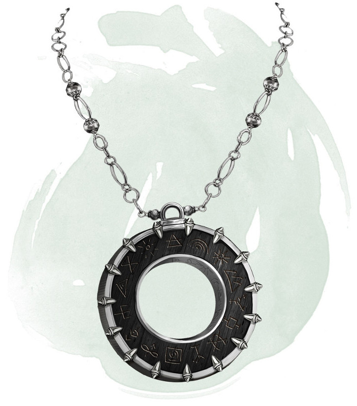

Amulette des plans
Objet merveilleux, très rare (nécessite un lien)
Lorsque vous portez cette amulette, vous pouvez utiliser une action pour nommer un lieu qui vous est familier sur un autre plan d'existence. Ensuite, faites un jet d'Intelligence DD 15. En cas de réussite, vous lancez le sort changement de plan. En cas d'échec, vous et toute créature ou objet dans un rayon de 4,50 m voyagez vers une destination aléatoire. Lancez un d100. Sur 1-60, vous voyagez à un endroit aléatoire sur le plan que vous avez nommé. Sur 61-100, vous voyagez dans un plan d'existence déterminé au hasard.
Dungeon Master´s Guide (SRD)
